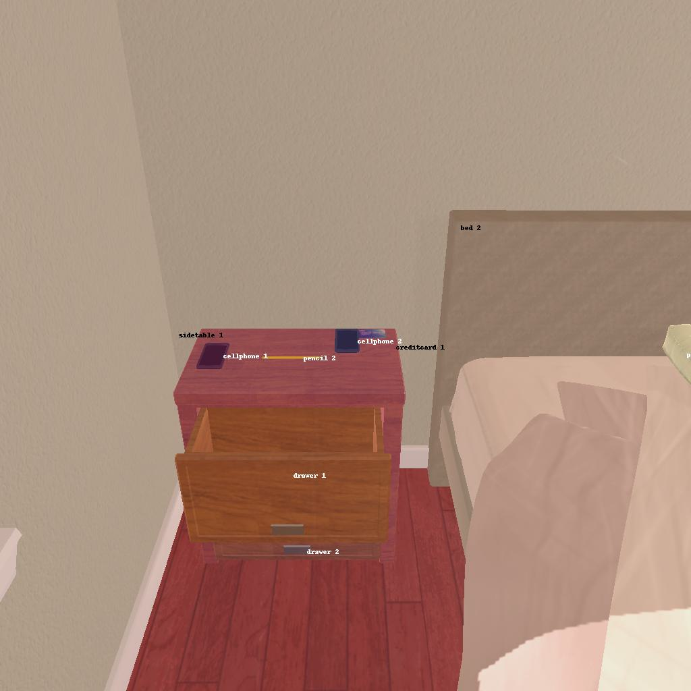

---------------------------------------------------------task: 6---------------------------------------------------------
--------------------------------------------------------------------------------------------------------------------------------------------------------------------
--------------------------------------------------------------------------------------------------------------------------------------------------------------------
Step:--------------------------------------------------------------------------10-------------------------------------------------------------------------------
----------------------------------------
VLM Prompt:
Image1:
**Instruction**
1. Analyze the provided image to identify all visible household objects, focusing on those relevant to the task description "put a cd in safe."
2. Use the analysis of the image and the task hint "The agent must find an object of the desired type, pick it up, find the correct location to place it, and put it down there." to answer the question: what is the most reasonable action in the choices for the task description "put a cd in safe"?
4. Decide and write the answer using the template: The answer is: (i): , where i is the real number. If there is no desired object in the image, search every place based on **Initial Observation** to find the object. And if no one is exactly correct, choose a similar answer.
**Initial Observation**
You are in the middle of a room. Looking quickly around you, you can see bed (1-2), dresser (1), sidetable (1-2), drawer (1-11), desk (1), garbagecan (1), safe (1)
**Answer Choices**
(1): go to bed 1
(2): go to dresser 1
(3): go to bed 2
(4): go to sidetable 1
(5): go to sidetable 2
(6): go to drawer 3
(7): go to drawer 4
(8): go to desk 1
(9): go to garbagecan 1
(10): go to drawer 5
(11): go to drawer 6
(12): go to drawer 7
(13): go to drawer 8
(14): go to drawer 9
(15): go to drawer 10
(16): go to drawer 11
(17): go to safe 1
(18): open drawer 2
(19): close drawer 2
(20): examine drawer 2
**Answer**
Let's think step by step by following the instructions.
----------------------------------------
----------------------------------------
Original Response:
The task is to put a CD in a safe. CDs are usually stored in drawers, desks, or places where other small items are kept. In the image provided, we can see an open drawer (drawer 1), but there's no visible CD inside it. We do not see a safe in the image either, so we must rely on the Initial Observation to guide us.
The Initial Observation lists several drawers, among other furniture items. Since we are looking for a CD, the most reasonable action would be to search through the drawers that have not yet been opened or examined. Starting with the closest unopened drawer makes the most sense.
The answer is: (18): open drawer 2, as it is the next unopened drawer visible in the image, and it could potentially contain the CD we need to put in the safe. If the CD is not in drawer 2, then we would proceed to search every place based on Initial Observation to find the object.
----------------------------------------
----------------------------------------
>>> Refine Original VLM Response and Get Pure Action: open drawer 2, as it is the next unopened drawer visible in the image, and it could potentially contain the CD we need to put in the safe
----------------------------------------
-----------------------------------------------------------------
Running time: 8.308582782745361 seconds
Total Money: 1.8112900000000003
-----------------------------------------------------------------
-----------------------------------------------------------------
Text Observation:Nothing happens.
-----------------------------------------------------------------
UNSUCCEED